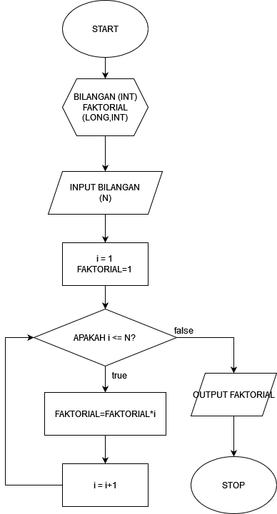

UTS Algoritma dan Pemrograman
Anggota Kelompok:
- Mirza Fazle Rabbi S. (322410013)
- Lucas Vincent Kurniawan O. N. (322410010)
1. Menghitung Luas Persegi
Notasi Deskriptif:
1. Mulai
2. Masukkan panjang sisi
3. Hitung luas = sisi × sisi
4. Tampilkan luas
5. Selesai
Flowchart:
Kode C++ dan Keluaran:
#include <iostream>
using namespace std;
int main() {
float sisi, luas;
cout << "Masukkan panjang sisi: ";
cin >> sisi;
luas = sisi * sisi;
cout << "Luas persegi = " << luas;
return 0;
}
Output:
Masukkan panjang sisi: 5
Luas persegi = 25
2. Menentukan Bilangan Ganjil atau Genap
Notasi Deskriptif:
1. Mulai
2. Masukkan bilangan bulat
3. Jika bilangan habis dibagi 2
Maka bilangan genap
Jika tidak maka bilangan ganjil
4. Tampilkan hasil genap/ganjil
5. Selesai
Flowchart:
Kode C++ dan Keluaran:
#include <iostream>
using namespace std;
int main() {
int bilangan;
cout << "Masukkan bilangan: ";
cin >> bilangan;
if(bilangan % 2 == 0)
cout << "Bilangan Genap";
else
cout << "Bilangan Ganjil";
return 0;
}
Output:
Masukkan bilangan: 7
Bilangan Ganjil
3. Menghitung Faktorial
Notasi Deskriptif:
1. Mulai
2. Masukkan bilangan n
3. faktorial = 1
4. Untuk i = 1 sampai n
faktorial = faktorial × i
5. Tampilkan faktorial
6. Selesai
Flowchart:

Kode C++ dan Keluaran:
#include <iostream>
using namespace std;
int main() {
int n;
long faktorial = 1;
cout << "Masukkan bilangan: ";
cin >> n;
for(int i = 1; i <= n; ++i) {
faktorial = faktorial*i;
}
cout << "Faktorial dari " << n << " = " << faktorial;
return 0;
}
Output:
Masukkan bilangan: 5
Faktorial dari 5 = 120